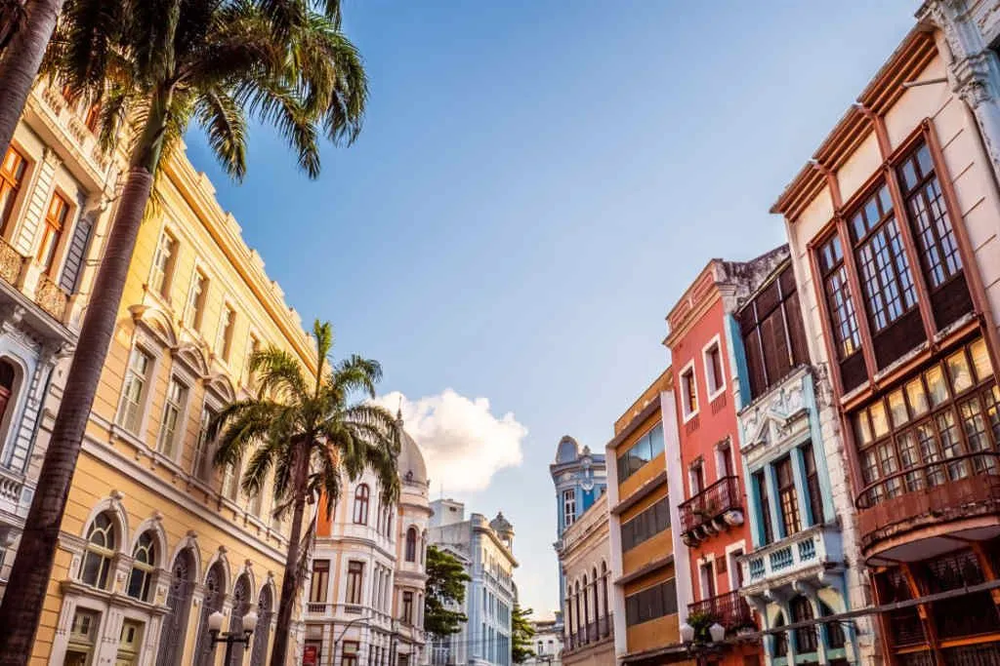

Paço do Frevo

Você sabia?
O Paço do Frevo é um museu dedicado ao ritmo musical e dança que surgiu em Pernambuco há mais de 100 anos.
Rua do Bom Jesus
A Rua do Bom Jesus é uma das mais antigas e charmosas de Recife, no bairro do Recife também, com casarões coloridos que datam do século XVII. Foi considerada a 3ª rua mais bonita do mundo pelo Architectural Digest.